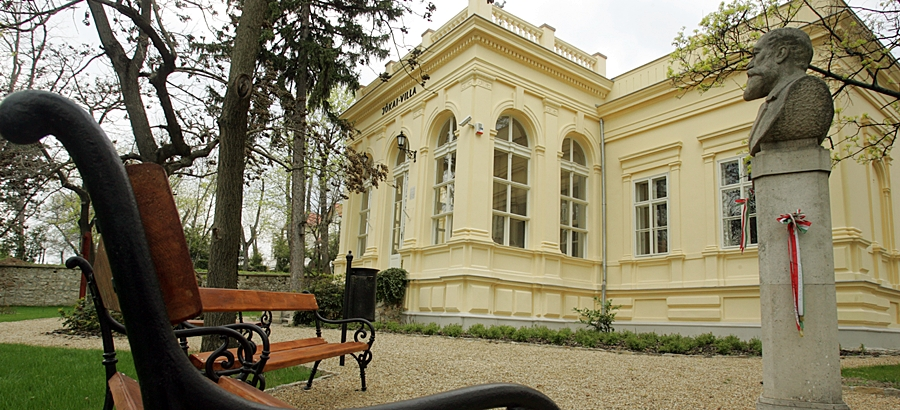

Komárom
Itt született Jókai Mór 1825. február 18-án. A város jelentős hatással volt írói munkásságára.
Itt született Jókai Mór 1825. február 18-án. A város jelentős hatással volt írói munkásságára.
A református kollégiumban tanult, ahol először kezdett írással foglalkozni.

1842-ben itt töltötte joggyakorlatát, ami számos művében megjelenik.
Az 1840-es években költözött Pestre, ahol aktív irodalmi és politikai életet élt.

Kedvelt nyaralóhelye volt, nyaralót is építtetett.
Az 1848-49-es szabadságharc után itt bujkált több hónapig.
Többször járt a városban, amely több művében is megjelenik.
A város és környéke több regényének helyszínéül szolgált.